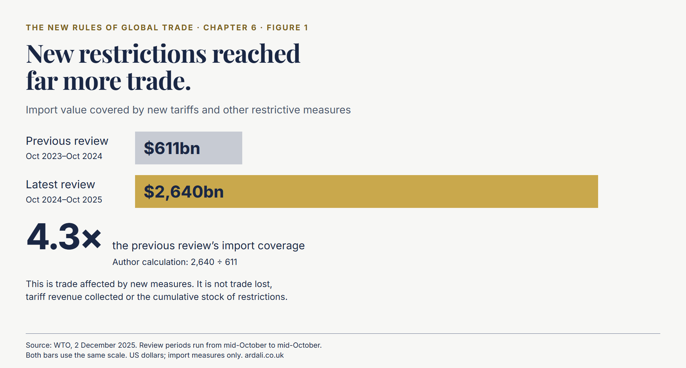
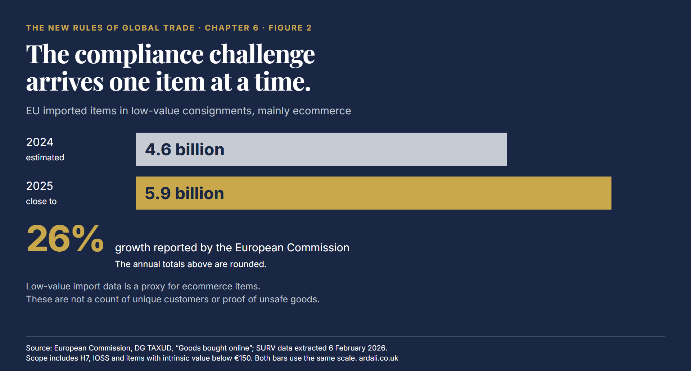
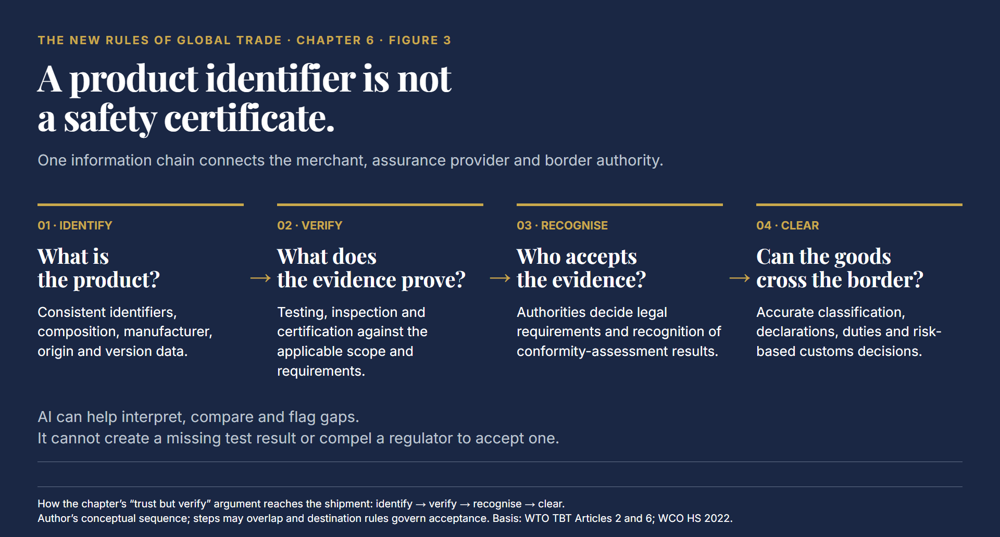
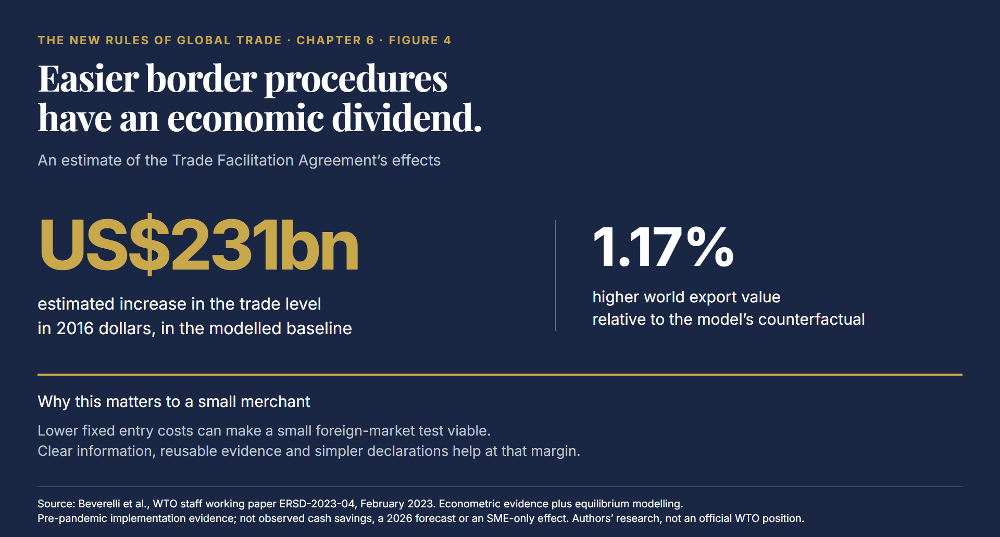
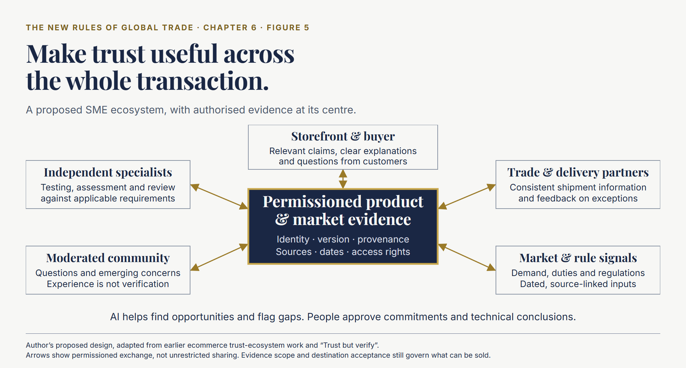

Five T-shirts in a parcel. Three T-shirts and a watch in another.
For distance-sold imports within the €150 low-value threshold, the European Commission’s example of the temporary duty applying from July 2026 gives €3 for the first and €6 for the second. The distinction follows tariff classification, not the number of physical units. Preferential-trade and customs-union goods can be excluded under conditions in the detailed guidance. “A €3 parcel charge” is therefore an inadequate basis for a commercial decision.12
A government announces a policy. A merchant must translate it into sourcing, prices, declarations, checkout and customer service. A carrier must apply it across thousands of customers. The buyer simply wants the right product at the promised delivered price.
Chapter 5 explored how AI gives smaller businesses access to capabilities they could not build themselves. This chapter considers the next constraint: a capable business still needs permission, evidence and viable economics to enter a market.
Freer trade depends partly on political choices. It also depends on making legitimate trade easier to execute. Trusted product information, coordinated logistics and testing, inspection and certification (TIC)† can reduce uncertainty and repeated work. AI can help connect those activities. None can make a tariff disappear.
A Large Market, Millions of Small Decisions
UNCTAD’s April 2026 update put world trade in goods and services at approximately US$35 trillion in 2025, up around US$2.5 trillion. That is trade value, influenced by prices as well as volumes.3
The WTO recorded US$2.64 trillion of imports affected by new tariffs and other restrictive measures between mid-October 2024 and mid-October 2025, against US$611 billion in the preceding review: approximately 4.3 times the coverage. This is trade affected, not trade lost or tariff revenue collected.4

Figure 1. Import value covered by new restrictive measures in successive WTO reviews. Periods run from mid-October to mid-October; 4.3× is an author calculation.
Ecommerce adds transaction density. European Commission estimates put imported items in low-value consignments at 4.6 billion in 2024 and close to 5.9 billion in 2025. It reports 26% growth; the headline totals are rounded. Each item sits within a commercial chain of product information, payment, declarations and delivery.5

Figure 2. Imported items in low-value consignments, mainly ecommerce. These are not counts of shoppers or unsafe goods. Source: European Commission, DG TAXUD.
Even the shared customs language contains 5,612 six-digit subheadings in the WCO’s HS 2022 edition, used across more than 200 countries and customs or economic unions. That framework classifies goods; it does not establish their safety or admissibility.6
For an SME, the difficulty is the intersection: this product, from this origin, entering this destination, under the rules in force today. A small change in any one can alter margin, documentation or the delivery promise.
Governments Can Protect Trade or Obstruct It
Not every rule is an unnecessary barrier. Consumers should not bear the cost of unsafe toys, counterfeit goods or misleading claims simply because international shopping is convenient.
The WTO’s Technical Barriers to Trade Agreement recognises objectives including health, safety, environmental protection and national security. It also requires technical regulations not to be more trade-restrictive than necessary to achieve their legitimate objectives.7
The balance is difficult. An EU control action checked 20,000 toys and small electronics; more than half did not follow EU standards. Of a selected subset laboratory-tested for safety, 84% were dangerous. That finding concerns the controlled sample and tested subset, not all ecommerce imports.8
Good policy targets the risk. Poorly coordinated policy makes compliant businesses prove the same thing repeatedly, while less responsible sellers exploit the gaps.
Tariffs are a separate political instrument. They can support domestic industries, raise revenue or serve negotiating objectives, but they also change sourcing decisions and consumer prices. A merchant cannot plan sensibly when implementation dates, classifications or exemptions remain unclear.
Democratic accountability should make the trade-offs visible. What problem does the measure address? Who pays? Does it improve safety, or mainly shift business towards domestic suppliers? Could the same objective be achieved with less disruption?
The burden is uneven. A large group can spread customs expertise, local representation and systems integration across many products and orders. A small merchant may face the same initial questions for a handful of sales. Adding a modest administrative charge can therefore change which businesses participate, even when the headline tariff is identical.
Businesses must also distinguish changing a shipping route from changing the product’s origin. Moving stock to another warehouse does not by itself establish a new country of origin. Equally, substituting a component to improve cost can alter the evidence needed for the finished product. A decision that looks attractive in a freight spreadsheet may create work elsewhere.
Predictable rules do not guarantee an attractive market. They do allow a business to decide whether it has one.
Trust but Verify: From Assurance to a Sale
In “Trust but verify”: Bridging the Trust Gap in Ecommerce,9 I argued that online trade changes the way trust is established. Buyer and seller may never meet. A brand, marketplace or product page must carry confidence that a personal relationship once supplied.
The paper’s practical structure remains useful: product, process and presentation. Check what the product is and whether it meets relevant requirements. Understand how and where it was made. Then communicate the evidence clearly enough for a buyer to use it. Assurance hidden in a filing system cannot help someone deciding whether to purchase.
This matters commercially as well as legally. A merchant who can explain provenance, relevant testing and a credible returns promise gives a distant buyer reasons to proceed. Trust should support differentiation and repeat business, rather than appear only when a regulator asks questions.
TIC contributes where specialist evidence is needed: assessing a supplier, testing a product, checking production or verifying a particular claim. Its trade-enabling value is strongest when the resulting evidence is connected to the correct product and can be reused where recognition permits.
The distinction between evidence and presentation is particularly important online. A prominent symbol may make a buyer feel reassured, but the useful question is what it actually covers. Does it refer to this product version, a particular test, the supplier’s management system or something else? A source-linked explanation is more valuable than a generic badge that cannot be checked.
A certificate is not a universal passport. Scope, product version, applicable requirements and destination acceptance still matter. WTO provisions encourage acceptance of equivalent conformity-assessment results, while ILAC’s recognition arrangements help reduce repeated testing through confidence in accredited laboratories.710
Figure 3 connects this trust argument to the shipment. It separates four questions that are easily confused: identifying the product, establishing evidence, securing recognition and clearing customs. Friction arises when each participant has to reconstruct the answers.

Figure 3. Why evidence needs to travel with the product: the merchant, assurance provider, marketplace and border authority need a consistent chain of information. An identifier connects records; testing supports specific claims; destination rules determine acceptance; customs decisions determine clearance. This conceptual sequence is not a universal legal checklist.
Six Examples of Friction Being Removed
The following businesses address different points in that chain. Together they show how market intelligence, earlier customs decisions, reusable evidence and operational AI can make international trade more manageable. The table brings their activities and their relevance to an SME into one view.
| Company and role | What it is doing | Friction reduced | Practical relevance for an SME |
|---|---|---|---|
| DHL, an international express and logistics group | MyGTS uses AI and machine learning to compare trade lanes, duties, taxes, trade agreements and licensing requirements. Photo-assisted item descriptions add help at shipment preparation.1112 | Discovering requirements and landed costs too late; incomplete descriptions. | Compare destinations before committing to an offer, then review shipment information before submission. |
| Maersk, a global ocean-shipping and integrated logistics company | Trade and Tariff Studio combines AI with customs expertise to analyse trade data, classification, compliance risks and duty-saving options, including sourcing and production scenarios.1314 | Customs consequences considered only after procurement decisions. | Test the economics of a different material, supplier or production location before changing the supply chain. |
| CMA CGM, a global container-shipping and logistics group | Multilingual HappyRobot agents connect customer conversations to internal workflows. Its Eva agent contacted more than 4,000 customers in UK and Senegal campaigns; around one-third progressed to discussions about potential shipping routes.15 | Repeated enquiries, fragmented information and customer demand left unexplored. | Easier routine coordination and more systematic discussion of shipping needs. The campaign figure measures discussions, not bookings. |
| Amazon, an ecommerce marketplace and technology company | A one-submission testing pilot, starting with toys, consolidates testing, labelling and packaging specifications across destinations and recognises existing certifications. Early pilot sellers reported compliance-cost savings of up to 60%.16 | Repeated testing and fragmented country specifications. | Prepare a coordinated evidence package instead of starting again for every destination. The saving is a pilot maximum, not an average; this example concerns evidence reuse, not an AI-specific saving. |
| eBay, a global online marketplace | AI-driven product-safety screening blocked 21 million potentially unsafe listings during 2025, using information including recalls and safety alerts.17 | Risk information reaching the buying decision too late. | Connect product records to current safety information before listing. Screening complements testing; the figure counts listings rather than physical products. |
| Intertek, a global testing, inspection and certification group | SupplyTek brings supplier mapping, alternative sourcing, tariff and origin analysis, traceability, market-access requirements and supplier audits into a coordinated service.18 | Changing a supplier or route without knowing whether the alternative remains suitable for the destination. | Check the commercial and compliance consequences together, rather than commissioning disconnected exercises after the decision. |
Two lessons run across the examples. Start before the order, not at the border. And connect the work: a better supplier search has limited value if evidence is missing, while a faster declaration cannot repair an uneconomic landed cost.
AI also has an internal role in making specialist knowledge more accessible. Bureau Veritas’s Jules assistant, developed with AWS and Anthropic, went fully live in early 2025; its integrated report records more than 10,000 employees using it weekly. Intertek Inform provides AI-assisted questions and search across selected standards documents.1920
For the customer, the useful outcome is a better-informed response and less repeated work, not the number of AI features a provider can display.
What Easier Trade Is Worth
The economic opportunity is substantial even without abolishing tariffs. OECD estimates published in 2025 suggest trade-facilitation reforms helped reduce global trade costs by almost 5%, using 2012–2022 manufacturing and agriculture data.21
A 2023 WTO staff study combined early Trade Facilitation Agreement implementation evidence with economic modelling. It estimated world export value 1.17% higher, approximately US$231 billion in 2016 dollars, relative to its counterfactual. This is a modelled trade effect, not a counted cash saving or a forecast in today’s dollars.22

Figure 4. Estimated effect of Trade Facilitation Agreement implementation. WTO staff research, February 2023; model calibrated to 2016 and informed by 2014–2019 evidence. The monetary and percentage figures describe the same modelled effect, not separate benefits.
For a smaller merchant, the critical gain may be making entry viable at all. An illustrative £1,000 compliance exercise costs £10 per order across 100 orders, but 10p across 10,000. Removing avoidable fixed costs makes a small foreign-market test less daunting. OECD research connects trade facilitation with SMEs’ ability to participate internationally.23
The United States, China, the EU and other major trading economies need not agree on every tariff to improve this. Advance rulings, pre-arrival processing, electronic payments and single-window cooperation are already part of the WTO Trade Facilitation Agreement.24
Governments should publish usable requirements, allow realistic transition periods, recognise competent evidence where appropriate and target enforcement at risk. They should also measure compliant consignments delayed, repeat requests for data and the effectiveness of appeals, rather than treating paperwork volume as success.
The EU’s Single Window programme connects customs with other certificate and permit systems; its business-to-government portal phase is planned for 2031.25 The direction matters: collect reliable information once, then reuse it lawfully. Safety need not mean starting the evidence trail again at every desk.
From Market Intelligence to an SME Trust Ecosystem
In Chapter 1, I discussed Kaifu Zhang and the ambition of a “World Model for Markets”. I see the relevant direction as using AI and real-time, large-scale data to analyse markets and identify opportunities for traders and merchants, rather than a TIC-specific application. The approach could nevertheless be useful to that sector: connect changing demand, trade conditions and product evidence to identify a commercially credible next market.
My earlier Ecommerce Vision & Strategy26 envisaged a connected trust ecosystem: merchant websites, a transactional service, a moderated community and external information linked to specialist internal data. Its cover is dated November 2017. The enduring idea is that connections make evidence more useful than isolated reports.
An SME-focused version would put a permissioned product-and-market evidence record at the centre. It could link a merchant’s store, supplier documentation, authorised test results, carrier data and relevant regulatory updates. Different participants would see what they need and are entitled to access, not a common pool of everyone’s confidential files.
AI could compare that record with target-market requirements and current commercial signals. It might identify a nearby market where existing evidence is largely reusable, flag a material change needing review, or warn that a newly attractive destination has become uneconomic after duties and returns.
A specialist provider’s distinctive contribution could be its own authorised historical records: test outcomes, inspection findings, corrective actions and recurring submission errors. Used with product and method context, these might help prioritise a review, anticipate laboratory demand or explain why a particular supplier change deserves attention. That is more useful than simply adding a chatbot to a document library.
Learning across clients would require specific rights and effective safeguards; the default should keep client records separate. An attractive pattern in historical data is a reason to investigate, not a substitute for a required test. Commercial recommendations must also remain separate from independent assessment decisions. The ecosystem earns trust only if it can explain both what it knows and where an expert still needs to intervene.
The service could then help the merchant obtain the missing assessment, prepare consistent information for logistics partners, and present a clear, source-linked explanation to the buyer. This would extend the product, process and presentation logic of Trust but verify into a continuing operating service.

Figure 5. Proposed SME trust ecosystem, adapted from my earlier strategy. The hub links controlled evidence to commercial activity; arrows represent permissioned information exchange, not unrestricted data sharing. Market suggestions require commercial review, and product claims remain limited to what the evidence supports.
Consider an illustrative small homewares brand considering a second European market. Its starting record contains product specifications, supplier details, authorised test reports and actual delivery and returns costs from its first market. The proposed service would check what can carry across and identify the gaps: perhaps a language requirement, a changed product component or an additional assessment.
Commercial signals might suggest demand, but the merchant would still compare expected contribution with the cost of closing those gaps. If it proceeds, the same controlled record could support the product page and the information handed to its carrier. If a supplier later changes a material, the record would trigger a review instead of silently carrying forward an old assurance. This is a proposed workflow, not an account of a client deployment.
A moderated community could contribute questions, emerging concerns and practical experience without turning popularity into proof. Specialist teams would verify technical conclusions. A TIC provider could support the evidence service and identify where clients need help, while preserving the independence of assessment decisions.
The commercial model could combine subscriptions for monitoring with paid specialist reviews. Its value would be continuity: keeping evidence current as suppliers, products, rules and destinations change, rather than selling another static report.
Start with one product family and two target markets. Measure time preparing evidence, repeated submissions, additional testing, clearance variability and contribution after duties, returns and service costs. Show the source and date behind each recommendation. If an assessment is missing, the system should expose the gap, not manufacture reassurance.
The Opportunity — One Clear Takeaway
Politics will keep shaping trade. Businesses cannot remove that uncertainty, but they can reduce the cost of responding to it.
The opportunity is to make confidence portable: reliable information moving from supplier to merchant, from specialist to marketplace, and across borders where recognition permits. AI can help find opportunities and organise the work; trusted evidence makes the proposed route defensible.
For an SME, the useful question is: which additional market could we serve profitably if we reused what we already know and removed avoidable border work?
That brings the argument back to trust. Verify what matters, communicate it clearly and keep the record current. The prize is more businesses able to trade, not merely more paperwork processed.
If you are reassessing an international growth model, a market-access proposition or the role of AI in commercial execution, reach out directly on LinkedIn.
Next: Chapter 7 — The Türkiye Opportunity. How proximity, manufacturing capability and cross-border commerce can become a viable route to market.
Author’s References
- Ken Ardali — Ecommerce Vision & Strategy. Original presentation cover dated November 2017; debranded reference edition, 6 November 2026. Especially pp. 4–8. Read the reference edition.
- Ken Ardali — “Trust but verify”: Bridging the Trust Gap in Ecommerce. Originally published by Tamebay (now ChannelX); author-edited, debranded reference edition, 6 November 2026. Especially pp. 3, 8–10. Original publisher and other contributor credits retained. Read the reference edition.
Both editions were adapted from the author-supplied originals. The Chapter 6 ecosystem is a new proposal, not a description of an existing deployment.